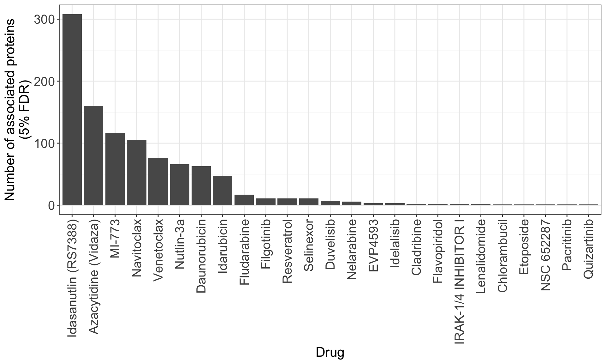
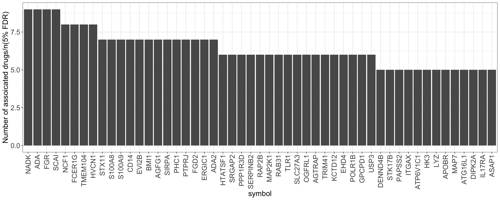
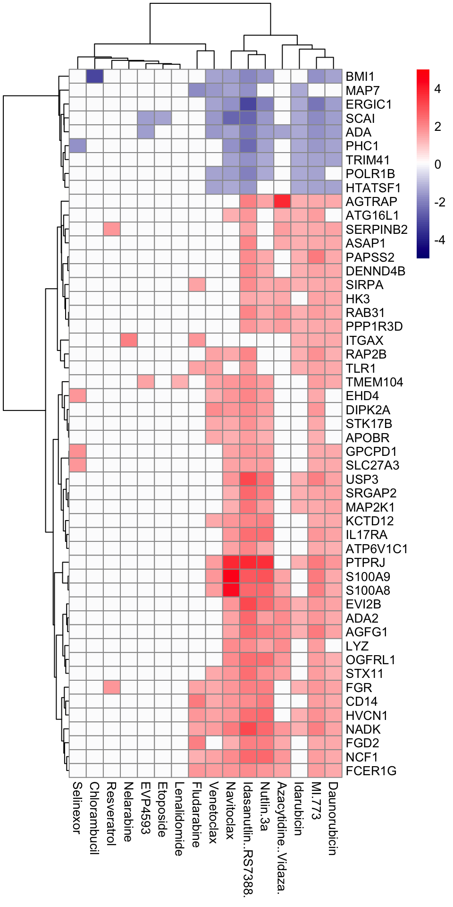
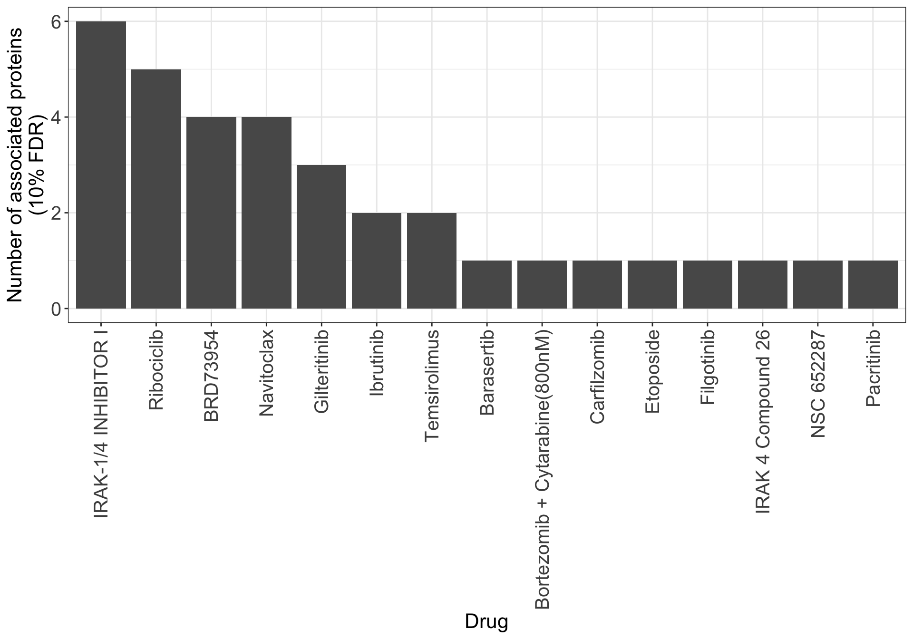
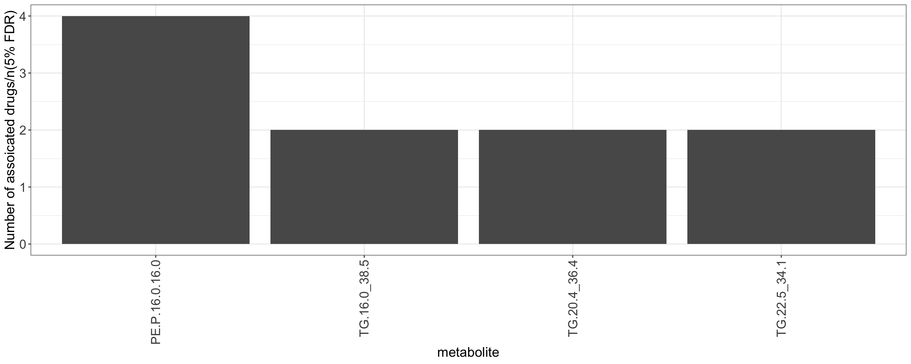
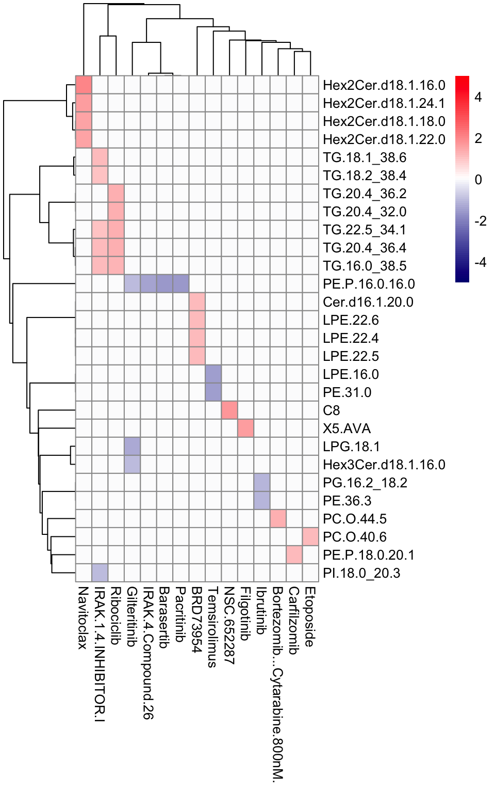

Last updated: 2024-05-31
Checks: 5 1
Knit directory: SMARTrial/analysis/
This reproducible R Markdown analysis was created with workflowr (version 1.7.0). The Checks tab describes the reproducibility checks that were applied when the results were created. The Past versions tab lists the development history.
Great job! The global environment was empty. Objects defined in the global environment can affect the analysis in your R Markdown file in unknown ways. For reproduciblity it’s best to always run the code in an empty environment.
The command set.seed(20220425) was run prior to running
the code in the R Markdown file. Setting a seed ensures that any results
that rely on randomness, e.g. subsampling or permutations, are
reproducible.
Great job! Recording the operating system, R version, and package versions is critical for reproducibility.
Nice! There were no cached chunks for this analysis, so you can be confident that you successfully produced the results during this run.
Great job! Using relative paths to the files within your workflowr project makes it easier to run your code on other machines.
Tracking code development and connecting the code version to the
results is critical for reproducibility. To start using Git, open the
Terminal and type git init in your project directory.
This project is not being versioned with Git. To obtain the full
reproducibility benefits of using workflowr, please see
?wflow_start.
seProt <- protSmart[,protSmart$DISEASE == "AML"]
colnames(seProt) <- seProt$SMART_IDoverPat <- intersect(seProt$SMART_ID, seDrug_conc$patientID)
seProt <- seProt[,seProt$SMART_ID %in% overPat]
seDrug_auc <- seDrug_auc[,seDrug_auc$patientID %in% overPat]
seDrug_conc <- seDrug_conc[,seDrug_conc$patientID %in% overPat]
viabTab <- viabTab %>% filter(patientID %in% overPat)seProt <- seProt[rowMeans(is.na(assay(seProt)))<=0.5,]Protein
dim(seProt)[1] 7982 20Drugs
dim(seDrug_auc)[1] 107 20testDrugAssociations <- function(seDrug, seProt) {
drugMat <- assay(seDrug)
protMat <- assay(seProt)
overlapCol <- intersect(colnames(drugMat), colnames(protMat))
resTab <- BiocParallel::bplapply(seq(nrow(drugMat)), function(i) {
modelMat <- data.frame(row.names = colnames(drugMat), viab = drugMat[i,])
designMat <- model.matrix(~viab, modelMat)
testMat <- protMat[,rownames(designMat)]
fit <- lmFit(testMat, design = designMat)
fit2 <- eBayes(fit)
res <- topTable(fit2, number = Inf, coef = "viab") %>%
as_tibble(rownames = "protID") %>%
mutate(Drug = rownames(drugMat)[i], nSample = nrow(designMat))
}) %>%
bind_rows()
return(resTab)
}Perform hypothesis testing
seDrug <- seDrug_auc
resTab <- testDrugAssociations(seDrug, seProt)Add annotations
resTab <- arrange(resTab, P.Value) %>%
mutate(symbol = rowData(seProt[protID,])$Genes)Number of associations per-drug
sumDrugTab <- filter(resTab, adj.P.Val < 0.05) %>%
group_by(Drug) %>%
summarise(n=length(protID)) %>%
arrange(desc(n)) %>%
mutate(Drug = factor(Drug, levels = Drug))
ggplot(sumDrugTab, aes(x=Drug, y=n)) +
geom_bar(stat = "identity") +
theme(axis.text.x = element_text(angle = 90, hjust = 1, vjust = 0.5)) +
ylab("Number of associated proteins\n(5% FDR)")
Number of associations per-protein
sumProtTab <- filter(resTab, adj.P.Val < 0.05) %>%
group_by(protID) %>%
summarise(n=length(Drug)) %>%
arrange(desc(n)) %>%
mutate(symbol = rowData(seProt[protID,])$Genes) %>%
mutate(symbol = factor(symbol, levels = symbol)) %>%
filter(n>=5)
ggplot(sumProtTab, aes(x=symbol, y=n)) +
geom_bar(stat = "identity") +
theme(axis.text.x = element_text(angle = 90, hjust = 1, vjust = 0.5)) +
ylab("Number of assoicated drugs/n(5% FDR)")
Protein drug association heatmap
plotTab <- resTab %>% filter(adj.P.Val < 0.05) %>%
#filter(Drug %in% filter(sumDrugTab,n>=1)$Drug) %>%
filter(protID %in% filter(sumProtTab, n>=3)$protID) %>%
mutate(pSign = -log10(adj.P.Val)*sign(t)) %>%
select(symbol, Drug, pSign) %>%
pivot_wider(names_from = Drug, values_from = pSign) %>%
mutate(across(-symbol, replace_na, 0)) %>%
column_to_rownames("symbol") %>% data.frame()Warning: There was 1 warning in `mutate()`.
ℹ In argument: `across(-symbol, replace_na, 0)`.
Caused by warning:
! The `...` argument of `across()` is deprecated as of dplyr 1.1.0.
Supply arguments directly to `.fns` through an anonymous function instead.
# Previously
across(a:b, mean, na.rm = TRUE)
# Now
across(a:b, \(x) mean(x, na.rm = TRUE))breaks <- seq(-5,5, length.out =100)
pheatmap::pheatmap(plotTab, clustering_method = "ward.D2",
color=colorRampPalette(c("navy", "white", "red"))(100),
breaks = breaks)
seMeta <- metaSmart
seMeta <- seMeta[,seMeta$DISEASE == "AML"]
colnames(seMeta) <- seMeta$SMART_IDoverPat <- intersect(seMeta$SMART_ID, seDrug_conc$patientID)
seMeta <- seMeta[,seMeta$SMART_ID %in% overPat]
seDrug_auc <- seDrug_auc[,seDrug_auc$patientID %in% overPat]
seDrug_conc <- seDrug_conc[,seDrug_conc$patientID %in% overPat]
viabTab <- viabTab %>% filter(patientID %in% overPat)seMeta <- seMeta[rowMeans(is.na(assay(seMeta)))<=0.5,]Metabolites
dim(seMeta)[1] 478 20Drugs
dim(seDrug_auc)[1] 107 20testDrugAssociations <- function(seDrug, seMeta) {
drugMat <- assay(seDrug)
metaMat <- assay(seMeta)
overlapCol <- intersect(colnames(drugMat), colnames(metaMat))
resTab <- BiocParallel::bplapply(seq(nrow(drugMat)), function(i) {
modelMat <- data.frame(row.names = colnames(drugMat), viab = drugMat[i,])
designMat <- model.matrix(~viab, modelMat)
testMat <- metaMat[,rownames(designMat)]
fit <- lmFit(testMat, design = designMat)
fit2 <- eBayes(fit)
res <- topTable(fit2, number = Inf, coef = "viab") %>%
as_tibble(rownames = "metabolite") %>%
mutate(Drug = rownames(drugMat)[i], nSample = nrow(designMat))
}) %>%
bind_rows()
return(resTab)
}Perform hypothesis testing
seDrug <- seDrug_auc
resTab <- testDrugAssociations(seDrug, seMeta)Number of associations per-drug
sumDrugTab <- filter(resTab, adj.P.Val < 0.1) %>%
group_by(Drug) %>%
summarise(n=length(metabolite)) %>%
arrange(desc(n)) %>%
mutate(Drug = factor(Drug, levels = Drug))
ggplot(sumDrugTab, aes(x=Drug, y=n)) +
geom_bar(stat = "identity") +
theme(axis.text.x = element_text(angle = 90, hjust = 1, vjust = 0.5)) +
ylab("Number of associated proteins\n(10% FDR)")
Number of associations per-metabolite
sumProtTab <- filter(resTab, adj.P.Val < 0.10) %>%
group_by(metabolite) %>%
summarise(n=length(Drug)) %>%
arrange(desc(n)) %>%
#mutate(symbol = rowData(seProt[protID,])$Genes) %>%
mutate(metabolite = factor(metabolite, levels = metabolite)) %>%
filter(n>=2)
ggplot(sumProtTab, aes(x=metabolite, y=n)) +
geom_bar(stat = "identity") +
theme(axis.text.x = element_text(angle = 90, hjust = 1, vjust = 0.5)) +
ylab("Number of assoicated drugs/n(5% FDR)")
metabolite drug association heatmap
plotTab <- resTab %>% filter(adj.P.Val < 0.1) %>%
#filter(Drug %in% filter(sumDrugTab,n>=1)$Drug) %>%
#filter(protID %in% filter(sumProtTab, n>=3)$protID) %>%
mutate(pSign = -log10(adj.P.Val)*sign(t)) %>%
select(metabolite, Drug, pSign) %>%
pivot_wider(names_from = Drug, values_from = pSign) %>%
mutate(across(-metabolite, replace_na, 0)) %>%
column_to_rownames("metabolite") %>% data.frame()
breaks <- seq(-5,5, length.out =100)
pheatmap::pheatmap(plotTab, clustering_method = "ward.D2",
color=colorRampPalette(c("navy", "white", "red"))(100),
breaks = breaks)
sessionInfo()R version 4.2.0 (2022-04-22)
Platform: x86_64-apple-darwin17.0 (64-bit)
Running under: macOS Big Sur/Monterey 10.16
Matrix products: default
BLAS: /Library/Frameworks/R.framework/Versions/4.2/Resources/lib/libRblas.0.dylib
LAPACK: /Library/Frameworks/R.framework/Versions/4.2/Resources/lib/libRlapack.dylib
locale:
[1] en_US.UTF-8/en_US.UTF-8/en_US.UTF-8/C/en_US.UTF-8/en_US.UTF-8
attached base packages:
[1] stats4 stats graphics grDevices utils datasets methods
[8] base
other attached packages:
[1] forcats_0.5.1 stringr_1.4.1
[3] dplyr_1.1.4.9000 purrr_0.3.4
[5] readr_2.1.2 tidyr_1.2.0
[7] tibble_3.2.1 ggplot2_3.4.1
[9] tidyverse_1.3.2 SummarizedExperiment_1.26.1
[11] Biobase_2.56.0 GenomicRanges_1.48.0
[13] GenomeInfoDb_1.32.2 IRanges_2.30.0
[15] S4Vectors_0.34.0 BiocGenerics_0.42.0
[17] MatrixGenerics_1.8.1 matrixStats_0.62.0
[19] limma_3.52.2
loaded via a namespace (and not attached):
[1] bitops_1.0-7 fs_1.5.2 lubridate_1.8.0
[4] RColorBrewer_1.1-3 httr_1.4.3 rprojroot_2.0.3
[7] tools_4.2.0 backports_1.4.1 bslib_0.4.1
[10] utf8_1.2.4 R6_2.5.1 DBI_1.1.3
[13] colorspace_2.0-3 withr_3.0.0 tidyselect_1.2.1
[16] compiler_4.2.0 git2r_0.30.1 cli_3.6.2
[19] rvest_1.0.2 xml2_1.3.3 DelayedArray_0.22.0
[22] labeling_0.4.2 sass_0.4.2 scales_1.2.0
[25] digest_0.6.30 rmarkdown_2.14 XVector_0.36.0
[28] pkgconfig_2.0.3 htmltools_0.5.4 highr_0.9
[31] dbplyr_2.2.1 fastmap_1.1.0 rlang_1.1.3
[34] readxl_1.4.0 rstudioapi_0.13 farver_2.1.1
[37] jquerylib_0.1.4 generics_0.1.3 jsonlite_1.8.3
[40] BiocParallel_1.30.3 googlesheets4_1.0.0 RCurl_1.98-1.7
[43] magrittr_2.0.3 GenomeInfoDbData_1.2.8 Matrix_1.5-4
[46] Rcpp_1.0.9 munsell_0.5.0 fansi_1.0.6
[49] lifecycle_1.0.4 stringi_1.7.8 yaml_2.3.5
[52] zlibbioc_1.42.0 grid_4.2.0 parallel_4.2.0
[55] promises_1.2.0.1 crayon_1.5.2 lattice_0.20-45
[58] haven_2.5.0 hms_1.1.1 knitr_1.39
[61] pillar_1.9.0 codetools_0.2-18 reprex_2.0.1
[64] glue_1.7.0 evaluate_0.15 modelr_0.1.8
[67] vctrs_0.6.5 tzdb_0.3.0 httpuv_1.6.6
[70] cellranger_1.1.0 gtable_0.3.0 assertthat_0.2.1
[73] cachem_1.0.6 xfun_0.31 broom_1.0.0
[76] later_1.3.0 googledrive_2.0.0 gargle_1.2.0
[79] pheatmap_1.0.12 workflowr_1.7.0 ellipsis_0.3.2